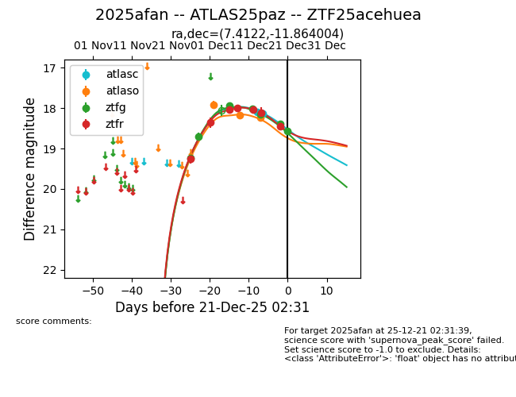
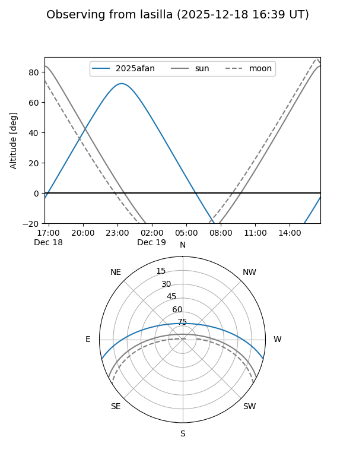
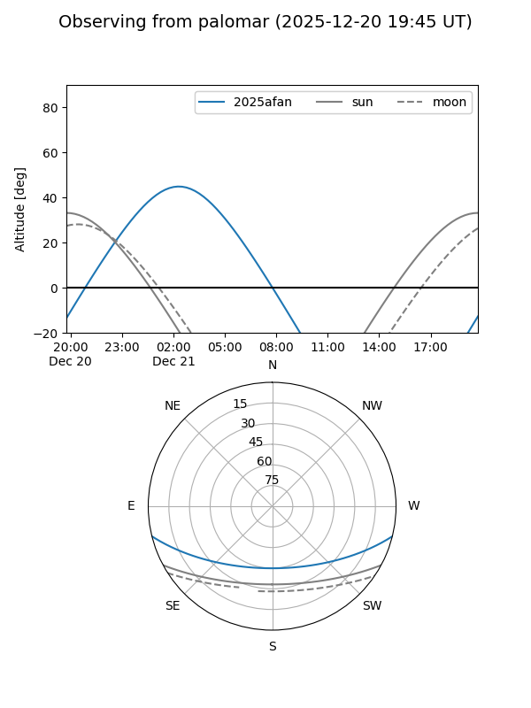
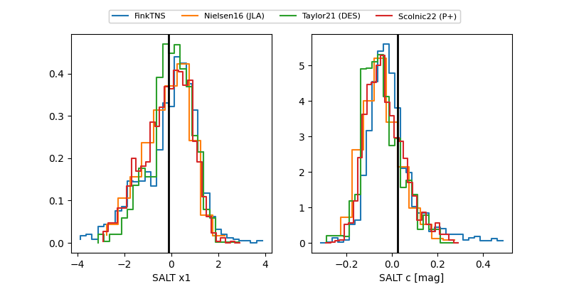

2025afan
Target 2025afan at 2025-12-21 02:32
Aliases and brokers:
FINK: fink-portal.org/ZTF25acehuea
Lasair: lasair-ztf.lsst.ac.uk/objects/ZTF25acehuea
ALeRCE: alerce.online/object/ZTF25acehuea
TNS: wis-tns.org/object/2025afan
YSE: ziggy.ucolick.org/yse/transient_detail/2025afan
alt names
ZTF25acehuea (ztf,fink_ztf)
2025afan (tns,yse)
ATLAS25paz (atlas)
Coordinates:
equatorial (ra, dec) = 7.4122,-11.86400
equatorial (HMS+DMS) = 00:29:38.92,-11:51:50.41
galactic (l, b) = (103.3566,-73.90193)
Flags:
Photometry:
last atlasc=18.14, atlaso=18.24, ztfg=18.56, ztfr=18.45
2 atlasc, 3 atlaso, 7 ztfg, 7 ztfr detections
Lightcurve

Visibility


Additional plots
